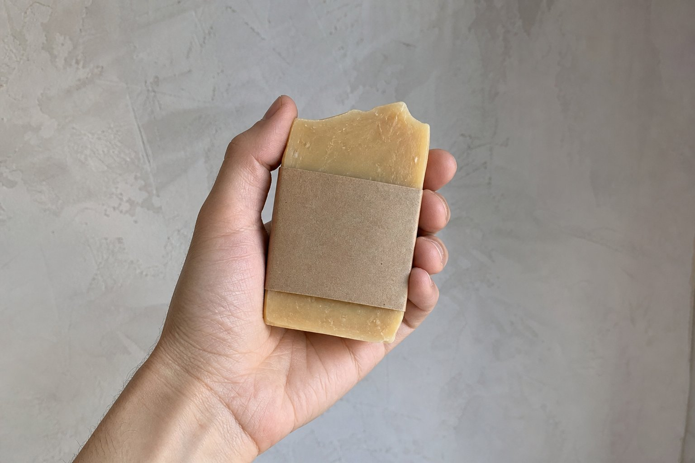

About
A label, not a spa.

Ravine is a Toronto label for bath bars. The bars are made in Ontario, sleeved for this name, and sold here and at stalls. We did not inherit a soapworks. There is no meadow.
Four scents, plus unscented. 110 grams. A bar lasts about three to four weeks on a dry dish. The point of the stall is that you smell it before you pay. The point of this site is that you can get the same bar again without waiting for the next stall.
We will not tell you a bar treats eczema, kills germs, or detoxifies anything. It cleans. Some of them smell like cedar or tea. That is the product.
Made in Ontario is a claim we only keep if the maker’s cost letter supports it. Until that letter is in the file, treat the line on this site as the intention of the label, and check the sleeve on the bar you actually receive.